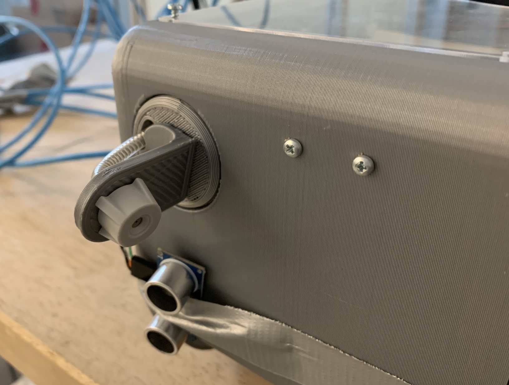
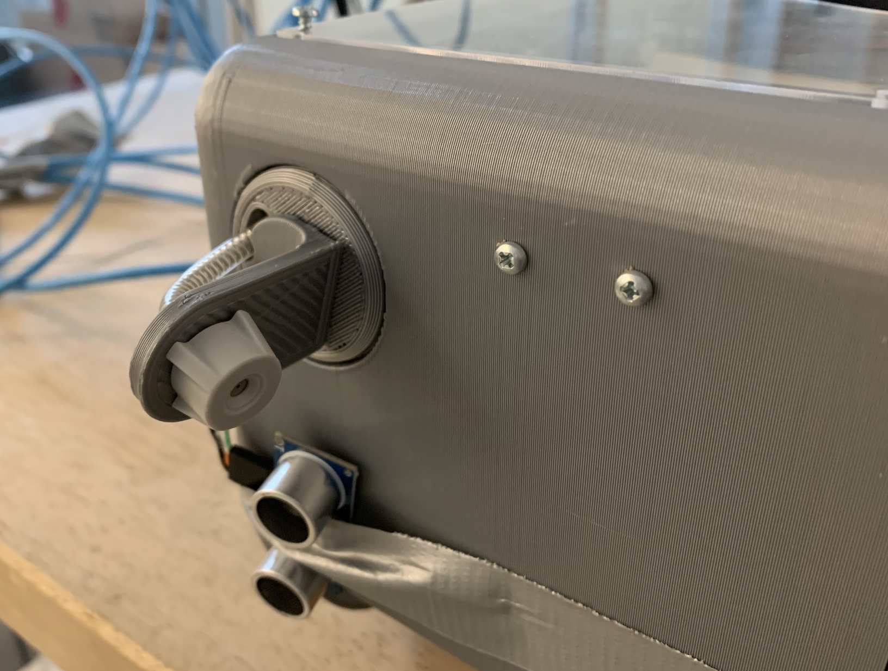

Autonomous Window Cleaner
This project was completed in the fall 2021 semester as a part of the UC Berkeley ME102B class (Mechatronics Design) — I worked on it with my project partner in a group of two. We sought to provide a prototype aimed at cleaning windows without the requirement of a human. We viewed this as a way to improve worker safety and productivity. Initially, we envisioned our cleaner to be suspended at each corner by four cables. This rope would be winched in and out by four separate gearmotors allowing the robot to move. The cleaner would push against the window by manipulating its center of gravity. In the end, because of cost and difficult kinematics we opted for a cartesian system with linear motion in the x axis (along the building) and a winch to raise and lower the cleaner in the y axis (up and down the building). Additionally, we used powered fans to press the cleaner against the window instead of a weight shift mechanism.
Final Design
Wiring Schematic & Finite State Machine
The finite state machine enabled the cleaner's functionality to be easily programmed in a logical way using switch-case logic and event checker and service functions. Here are the states:
- Idling: When the device is turned on, it is in the idling state. Nothing is actuated, but when the push button is pressed, it enters the Pull Cables state.
- Pull Cables: This state acts as a vertical calibration state. The winch motor is activated, pulling up the cleaning box via its string until the top of the box hits the vertical limit switch — when this occurs, it enters the Calibrate Left state. Throughout the Pull Cables state, the winch motor's encoder is used to implement a PI controller for the winch motor's angular velocity. This allows the winch motor to wind up even under the weight of the cleaner box.
- Calibrate Left: In this state, the winch motor is turned off, and the stepper motor moves the crane left until the horizontal limit switch is hit. Once achieved, the stepper motor shuts off, and the device enters the Clean Down state.
- Clean Down: In this state, the cleaner motor is turned on, activating the foam rollers. The sprayer and brushless fans are activated along with the winch motor in the downward direction.
- Disengage Down: If an intermediate window divider is detected by the ultrasonic sensor, the fans, sprayer, and rollers are turned off, and the box is moved down. It is not pressed against the window due to the fans being turned off, allowing it to move across a window divider. After the specified distance is travelled via the winch encoder, the Clean Down state is reactivated.
- Move Up: If the total building height has been travelled, and the ultrasonic sensor detects the ground, the cleaner, sprayer, and fans are turned off, and the winch pulls the box back up to the top (until the vertical limit switch). The stepper motor then moves right to the next column, and the process continues.
CAD Modeling

 


A strategy that worked well is isolating certain subsystems and repeatedly testing them on their own so that when the entire device was integrated, more of the focus could be on assessing the performance of the device as a whole. While this did work—we reliably had each subsystem working well—we integrated and tested the entire device a bit too late, and overlooked certain aspects of its mechanical performance. An example is the weight distribution issue of the cleaner. We spent so much time building, designing, and testing each individual subsystem, that when we fully integrated everything, we found that the cleaner had too much weight on its left side. Had we known this earlier, we could have moved around certain components.